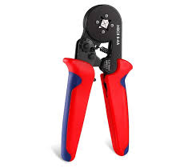
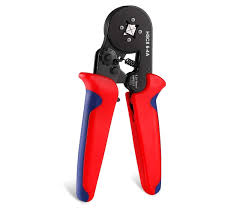

Ecco alcuni strumenti utili
Pinza crimpatrice:
Tester per cavi RJ45:

Scopri come realizzare un cavo Ethernet in pochi semplici passi!
Segui questi semplici passaggi per realizzare un cavo Ethernet:
Pinza crimpatrice:
Tester per cavi RJ45: